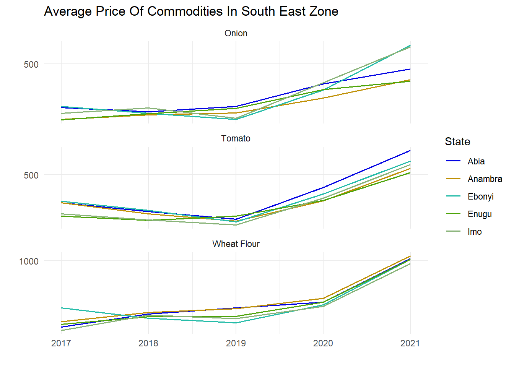
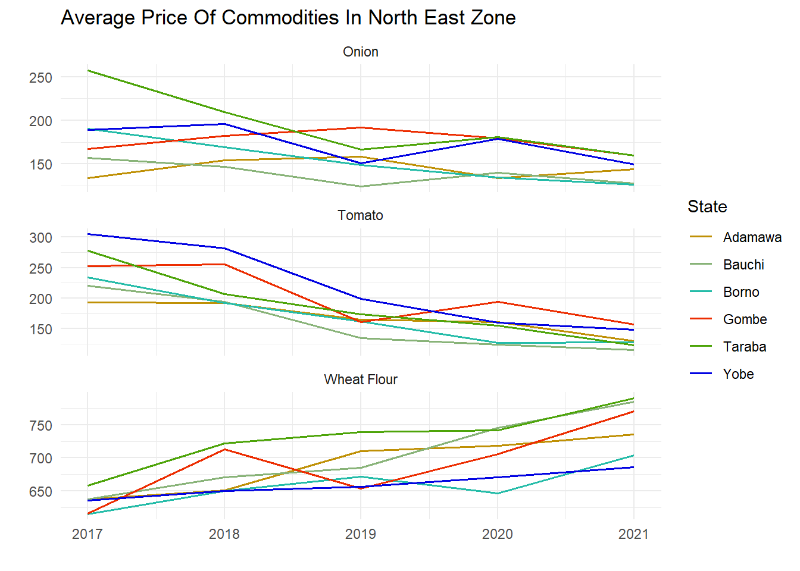

Nigeria Food Commodity Price Analysis From 2017 - 2021
Data
The data used for this analysis was generated by the National Bureau of Statistics in Nigeria, it contains the prices of several food commodities either produced or imported into Nigeria which are either used for further production of other goods and services or for immediate consumption. It includes all 36 states of the federation including Abuja (Federal Capital Territory) and it runs for a period of 5 years i.e. 2017 to 2021. All data frames are in the data frames.R Script.
Function
All analysis functions used here are in the fc_functions.R Script.
head(uncleaned_data)## # A tibble: 6 × 63
## ItemLabels `42736` `42767` `42795` `42826` `42856` `42887` `42917` `42948`
## <chr> <dbl> <dbl> <dbl> <dbl> <dbl> <dbl> <dbl> <dbl>
## 1 Agric eggs me… 460. 486. 520. 521. 560. 564. 521. 501.
## 2 Agric eggs(me… 45.1 44.5 46.4 48.1 47.7 48.4 48.1 48.3
## 3 Beans brown,s… 471. 437. 416. 394. 474. 466. 458. 489.
## 4 Beans:white b… 421. 375. 400. 392. 470. 467. 464. 484.
## 5 Beef Bone in 1108. 955. 981. 970. 996. 991. 950. 1051.
## 6 Beef,boneless 1378. 1305. 1129. 1362. 1500. 1353. 1357. 1408.
## # … with 54 more variables: `42979` <dbl>, `43009` <dbl>, `43040` <dbl>,
## # `43070` <dbl>, `43101` <dbl>, `43132` <dbl>, `43160` <dbl>, `43191` <dbl>,
## # `43221` <dbl>, `43252` <dbl>, `43282` <dbl>, `43313` <dbl>, `43344` <dbl>,
## # `43374` <dbl>, `43405` <dbl>, `43435` <dbl>, `43466` <dbl>, `43497` <dbl>,
## # `43525` <dbl>, `43556` <dbl>, `43586` <dbl>, `43617` <dbl>, `43647` <dbl>,
## # `43678` <dbl>, `43709` <dbl>, `43739` <dbl>, `43770` <dbl>, `43800` <dbl>,
## # `43831` <dbl>, `43862` <dbl>, `43891` <dbl>, `43922` <dbl>, …
## # ℹ Use `colnames()` to see all variable namesData cleaning
The shape of the data where each column contains the prices of all
commodities for each states and Abuja in a single month, will create a
problem for this analysis, so the data will be transformed from a wide
format (the current shape) to a long format, where a column (date) will
have all the date for each commodity and state and another column
(price) will have all the price for each commodity and state. Also we
will add a new variable called (zone) for the geo-political zones each
state is situated. All these will be done using the custom
clean_data() function.
head(data)## # A tibble: 6 × 8
## item_labels state zone price date year month month_l…¹
## <chr> <chr> <chr> <dbl> <date> <dbl> <dbl> <ord>
## 1 Agric eggs medium size Abia South East 460. 2017-01-01 2017 1 January
## 2 Agric eggs medium size Abia South East 486. 2017-02-01 2017 2 February
## 3 Agric eggs medium size Abia South East 520. 2017-03-01 2017 3 March
## 4 Agric eggs medium size Abia South East 521. 2017-04-01 2017 4 April
## 5 Agric eggs medium size Abia South East 560. 2017-05-01 2017 5 May
## 6 Agric eggs medium size Abia South East 564. 2017-06-01 2017 6 June
## # … with abbreviated variable name ¹month_labelThe major concentration of this analysis will be on some of the most popular food commodities consumed in Nigeria, which are:
- Beans
- Rice
- Garri (cassava flakes)
- Chicken
- Tuber
- Cooking oil
- Fish
- Beef
- Bread
- Plantain &
- Others.
Important questions to answer:
Analysis based on the following questions will be explored using the food commodity data to understand how the price of different commodity changed over the course of 5 years for selected food commodities, states and regions in Nigeria.
- What was the average prices of fish & chicken across all state & Abuja.
- In 2019 & 2020 what was the average price of beans & garri across all states.
- How the price of rice change over the years in Lagos state, Rivers state and in the South East zone.
- Which month on an average have the lowest prices of tuber commodity in Benue state and Anambra state from 2020 to 2021.
- How did the price of cooking oil change over the selected period in Oyo state, Akwa ibom state and Delta state and also in the North West zone, South South zone, South West zone.
- What was the prices of bread for each state/zone in December 2019, January 2020.
- The minimum and maximum price of beef and plantain for all state.
- What were the average price of onion, tomato & Wheat for states in the South West, North Central and South East geo-political zone.
Average Price Of Fish And Chicken Across All State Including Abuja.
The plot shows the average price of the selected types of fish & chicken commodity for all 36 state and Abuja from 2017 to 2021.
loc_summary(fish_df, color = fish_colr)For the selected types of fish, Abuja had the highest purchasing cost for all the different types, averaging more than 1100. While Ekiti state, Taraba state and Osun state accounted for the lowest average price for Mackerel, Tilapia & Titus respectively.
loc_summary(chicken_df, color = chicken_colr)The above plot shows that the average price of chicken Feet, Frozen chicken & chicken Wings was higher in mostly the southern part of the country and lower in mostly the northern part of the country.
Average Price of Beans and Garri Across All States In 2019 & 2020
average_price_year(beans_df, p_year = 2019, color = beans_colr)average_price_year(beans_df, p_year = 2020, color = beans_colr)Ebonyi state and Enugu state both had the highest average purchasing cost of both brown and white type of beans in 2019 and also 2020. Given that the largest growers of beans are Borno state, Zamfara state, Kano state, Yobe state & Sokoto state, most state in the north east had the lowest cost of purchasing beans on an average in 2019 and 2020.
average_price_year(garri_df, p_year = 2019, color = garri_colr)average_price_year(garri_df, p_year = 2020, color = garri_colr)Garri (cassava flour) is one of the most popular food consumed in Nigeria, it is mostly produced in states such as Anambra state, Benue state, Cross River state, Taraba state, Ondo state among others. The average price was high in states such as Bayelsa, Kogi, Kebbi and Gombe state for both white and yellow garri in 2019 while In 2020 Bayelsa, Ebonyi, Rivers and Enugu state had the highest average price. Kwara and Osun state had lowest average price in 2019 and in 2020 Ondo and Katsina state.
Price Of Rice In Lagos State, Rivers State & The south east zone.
price_over_years(rice_df, "Lagos")price_over_years(rice_df, "Rivers")price_over_years(rice_df, "South East")Approximately 7 million tonnes of rice is consumed in Nigeria yearly
and a huge amount is usually imported into the country.
For the various varieties of rice, In Lagos state the price
Ofada rice was the highest from 2017 to 2021,
imported rice was at it highest in 2021 of which it
started rising exponentially from 2020.
In Rivers state Imported rice was the high for most
part from 2017 to 2021 while other Locally grown types
of rice was the lowest mostly from 2017 to 2021 except for April and May
2017 when Agic rice was the lowest.
The Average price of Ofada ricee in the South East zone
region was the highest in 2017 & most part of 2018, while in the
later part of 2018 to 2021 Imported rice had it
dominance as the highest priced rice.
Average Price Of Tuber Commodity In Benue & Anambra From 2020 to 2021
average_price_month(tuber_df, "Benue", c(2020, 2021), color = tuber_colr)average_price_month(tuber_df, "Anambra", c(2020, 2021), color = tuber_colr)In Benue state Irish potato was sold at it lowest on an average from August to December while sweet potato was sold cheaply on an average in April, October & December. For yam, which was the cheapest among the other selected tubers across all months on an average was cheaper in October. Irish potato was sold expensively in Anambra state with the lowest average month in March, this was followed by yam with the lowest average in January and March. For sweet potato it was sold cheaply on an average in January and February.
Average Price Of Cooking Oil Across Selected Loactions.
The following plot below shows the comparison of cooking oil price from 2017 to 2021 in Oyo state, Akwa Ibom state and Delta state and also the north west region, south south region and south west region.
compare_price(cookingOil_df, c("Oyo", "Akwa_ibom", "Delta"))compare_price(cookingOil_df, c("North West", "South South", "South West"))
In Delta state the price Groundnut oil was higher than
the price in Akwa Ibom and Oyo state from 2019 to 2021, while for
Palm oil the price was higher in delta state for most
part from 2017 to 2021.
The price of all types of cooking oil was high in South South for most
part from 2017 to 2021 than in north west and south west.
Prices Of Bread For Each State/Zone
The following plots shows how price of bread changed during the period of December 2019 and January 2020 for all state including Abuja (FCT) and also for each geo-political zones in Nigeria.
filter_date(bread_df, 2019, 12, "state", color = bread_colr)filter_date(bread_df, 2020, 1, "state", color = bread_colr)filter_date(bread_df, 2019, 12, "zone", color = bread_colr)filter_date(bread_df, 2020, 1, "zone", color = bread_colr)For most regions the price of bread had a slight reduction on an average during December 2019 and January 2020 except for unsliced bread in south west and north east.
Minimum And Maximum Price Of Beef And Plantain In 2021.
The plots below shows Beef and Plantain minimum and maximum price for all states and geo-political zones in Nigeria in 2021.
min_max_price(beef_df, state, 2021)min_max_price(beef_df, zone, 2021)min_max_price(plantain_df, state, 2021)min_max_price(plantain_df, zone, 2021)Average Price of Onion, Tomato & Wheat for states Within Selected Zones.
The average price of the commodities from 2017 to 2021 for each states within the south west, south east and north east geo-political zones. the commodities include onion, tomato and wheat flour which are shown in the plots below.
zone_group(commodities_df, "South East")
zone_group(commodities_df, "South West")
zone_group(commodities_df, "North East")
End Note
- Given The recent economic recession and rise in inflation, food
commodities across all state have continued to rise year on year on an
average.
- Commodity grown locally within a state or Region mostly have lower
prices on an average as expected except for states affected by
insecurity, poor storage facilities etc, which have affect price
locally.
- A Large amount of food commodity are grown in the northern part of Nigeria which contributed to the cheaper price of commodity in most part of the north.